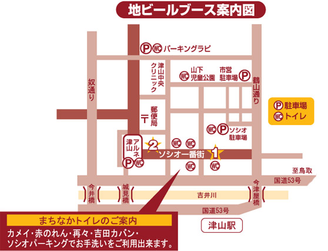

会場周辺マップ

アクセス
※お車を運転される方は飲酒をご遠慮ください。より大きな地図で 岡山県津山市京町４４−１ を表示
●バス
中鉄バス：大手町または吹屋町バス停下車
●JR
JR津山駅から徒歩5分
岡山方面
津山発普通 21:36 岡山着 23:02
津山発普通 20:59 岡山着 22:31
鳥取方面
津山発普通 20:46 美作加茂着 21:16
津山発普通 19:43 智頭着 20:49
佐用方面
津山発普通 20:54 美作江見着 21:31
津山発普通 19:28 佐用着 20:29
新見方面
津山発普通 21:52 中国勝山着 22:38
津山発普通 19:49 新見着 21:33
●高速
津山I.C.から津山市街地方面(西方向)へ約10分
院庄I.C.から津山市街地方面(東方向)へ約10分